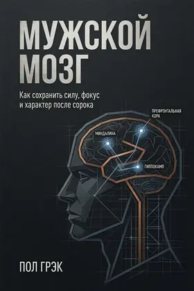
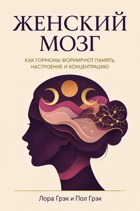

НаучпопУровни A–Dс Лорой
Мужской мозг
Сила, фокус и характер после сорока
Уровни доказательности A–D
Цена на Литрес


Вместе с Лорой
Научный гид по гормонам, циклам и когнитивному здоровью
Сначала бесплатная глава — потом покупка на Литрес.
Реклама · erid: 2VfnxyNkZrY · партнёрская ссылка Литрес
Оплата на Литрес или Amazon. Здесь — описание и фрагмент; сайт не принимает платежи.
A — надёжные данные; B — хорошие исследования; C — ограниченные данные; D — наблюдения.
Вместе с Лорой
Все книги серии →Нейробиологический и клинико-психологический подход к женскому мозгу. Без эзотерики и мифов. Доказательная медицина, цикл, перименопауза, когнитивное здоровье. Пол — механизмы. Лора (МГУ, клиника) — то, что женщины реально говорят в кресле.
«Я больше не понимаю свой мозг» — не слабость. Часто это физиология, а не «характер».
— Пол Грэк
Фрагмент из рукописи. Если стиль зайдёт — полный текст на Литрес.
# Предисловие: Почему мы написали эту книгу
Пол: Я помню тот день, когда моя жена Лора сказала: «Я больше не понимаю свой мозг». Ей было сорок три. Она забывала слова, теряла нить разговора, просыпалась в три утра и не могла уснуть. Она, клинический психолог, человек, который помогает другим справляться с тревогой, вдруг не могла справиться с собой.
Я, нейробиолог, начал читать исследования. И понял: то, что происходит с Лорой, — не «слабость» и не «возраст». Это физиология. Гормоны меняют мозг. И эти изменения реальны, измеримы, предсказуемы.
Но проблема была в другом. Информация разрозненна, противоречива и часто продается вместе с «чудо-средствами» и «энергетическими практиками».
Лора: Я помню, как сидела в кабинете гинеколога и слушала: «Это возрастное. Привыкайте». Я не хотела привыкать. Я хотела понимать. Я хотела знать, почему мой мозг работает иначе. Я хотела знать, что с этим делать.
Мы начали писать эту книгу вместе. Я — с позиции клинициста, который каждый день слышит от женщин: «Я схожу с ума». Пол — с позиции нейробиолога, который смотрит на мозг через призму гормонов, рецепторов, нейротрансмиттеров.
Эта книга — для вас. Для тех, кто устал от мифов о «женской логике» и «гормональных качелях». Для тех, кто хочет понимать свой мозг, а не бороться с ним. Для тех, кто готов к честному разговору о том, что действительно работает, а что — нет.
Мы не обещаем вам «вечной молодости» или «супер-энергии». Мы обещаем другое: системное понимание того, как работает ваш мозг — от нейрона до гормона, от менструации до менопаузы. И честный разговор о том, как сохранить когнитивное здоровье на долгие годы.

Пол Грэк — механизмы и протоколы. Лора Грэк — клинический психолог (МГУ), соавтор: голос кабинета.